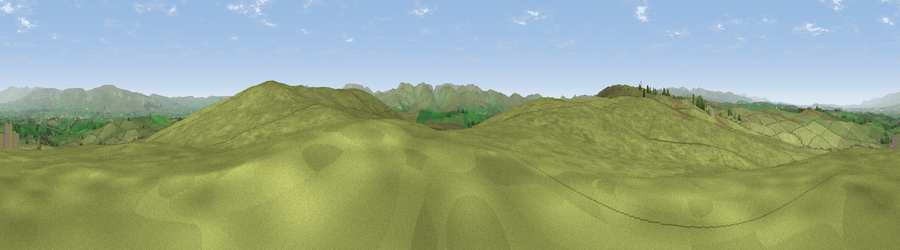

Viewpoint near Great Asby
#9493 in England · top 34% of its area beats it · near Great AsbyWhere it is
The exact computed spot (NY 66875 09775). Click the marker for map links.
The view, rendered

A 360° render of this exact spot computed from the terrain model, tree cover and land cover — summer colours, afternoon light, calibrated against photographs of famous viewpoints. Real trees, hedges and buildings will differ in detail.
The panorama
Grey silhouette: terrain skyline in each direction (720 bearings, Earth curvature and refraction included). Dashed green: skyline with trees (+15 m) and buildings (+8 m) as obstacles. Blue strip: how far the ground is visible on each bearing.
Where the view opens
Wedge length = distance to the farthest visible ground on that bearing (vegetation-aware). Rings at 10, 25 and 50 km.
What fills the view
98% grassland · 2% woodland ·
Angular shares of the visible panorama (visual magnitude), not map area. Landscape diversity 0.06 (0–1 Shannon).
Key numbers
More beautiful places nearby
The staircase of upgrades: each row has a higher view potential than everything closer. Driving times are estimates from straight-line distance, calibrated against real road routing — check an actual route before setting out.
| Place | Direction | Drive | Score |
|---|---|---|---|
| Viewpoint near Great Asby | ESE · 1 km | ~2 min | 67.2 |
| Knott | WSW · 2 km | ~6 min | 68.2 |
| Viewpoint near Crosby Garrett | ESE · 6 km | ~12 min | 69.3 |
| Viewpoint near Newbiggin on Lune | S · 9 km | ~18 min | 72.5 |
| Green Bell | SSE · 9 km | ~18 min | 75.2 |
| Randygill Top | S · 10 km | ~19 min | 76.0 |
| Fell Head | S · 12 km | ~22 min | 78.8 |
| Calders | S · 14 km | ~25 min | 79.0 |
54.48223, -2.51277 · source: screening · position refined by local search. Computed location — check access rights before visiting.